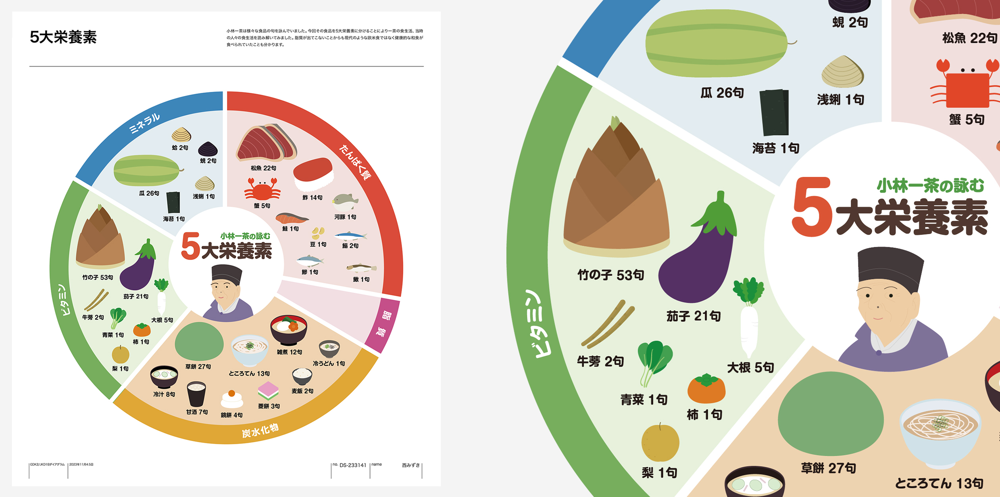
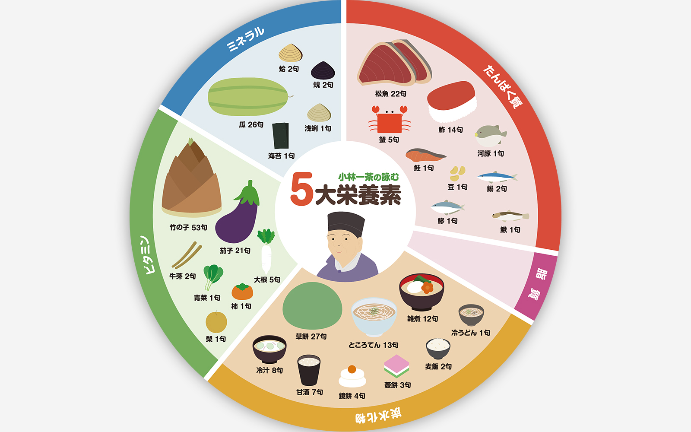
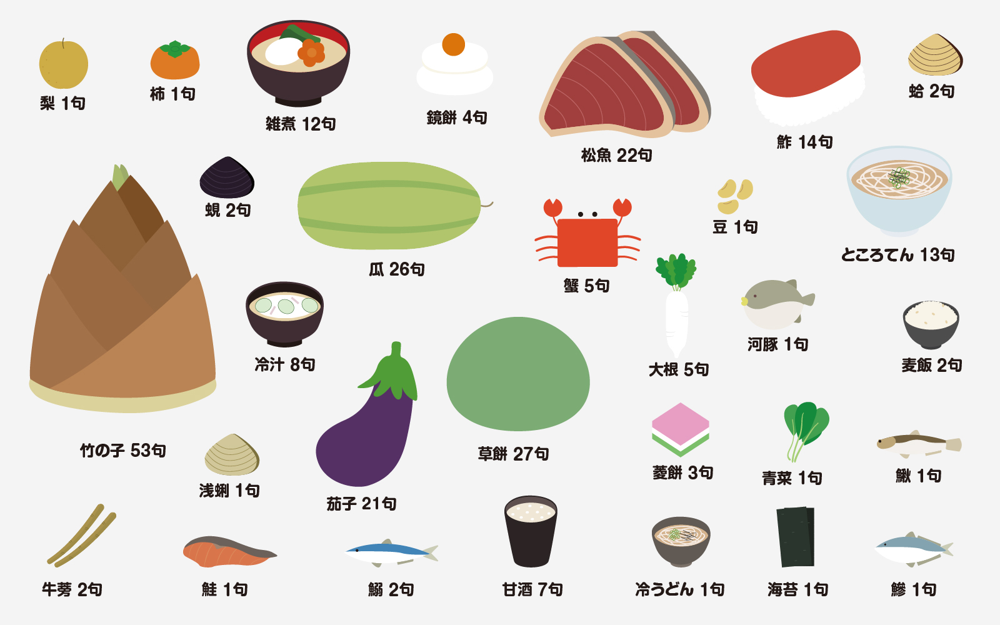
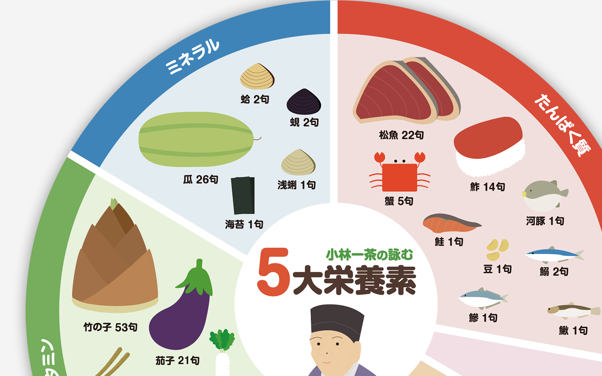

Musabi
ダイアグラム

小林一茶の俳句を基にダイアグラムを制作
background
制作背景
小林一茶の俳句や歴史の資料を基にダイアグラムを作成。
俳人・小林一茶の歴史や生き様を資料に基づいて整理し、ダイアグラムとして表現する共通のテーマ。
detail
制作について
「食材」に関する単語が多かったことから、それを生かし5大栄養素をテーマに円グラフ形式のダイアグラムを作成した。
独創的なアイデアとして評価され、学生約80名の投票で発表者（約8名）に選出された。
制作のポイント

POINT1
食材をテーマにした
さまざまなサイトや、学校で借りられる小林一茶の本を見ていたところ、「食材」に関する単語が多かったことから食材をイラストで表現したいと考え、食品が並ぶ表は何かを考えた。

POINT2
自作のイラスト
素材サイトのイラストの使用がNGだった為、イラストを参考にすることはあったが、自分で描いた。

POINT3
イラストのサイズ
句が多い食材に関してはイラストを大きくして、視覚的に分かるものにした。